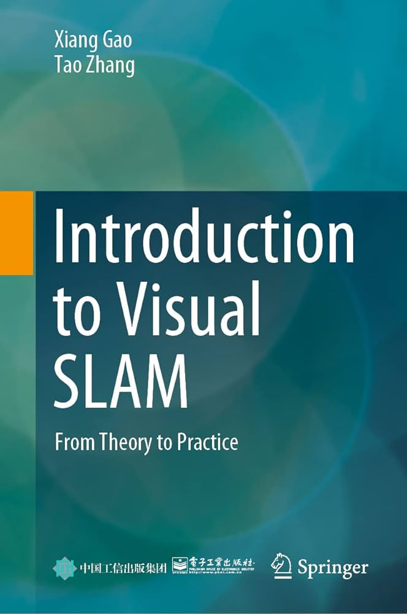

VSLAM course - Part 0x0 - Intro
Agenda of this lecture:
- What is this course?
- References
- What's VSLAM?
- Draft of the system
What is this course?
- Have fun!
- Tries to maximize accessibility in some sense:
- One simple approach from many possible, but complete.
- No black boxes (see all the way through abstraction).
- To hit this goal, we take opinionated choices.
- readability > performance - in real life, you need opposite.
- simulated data
- Don't just read it,
fight it!
